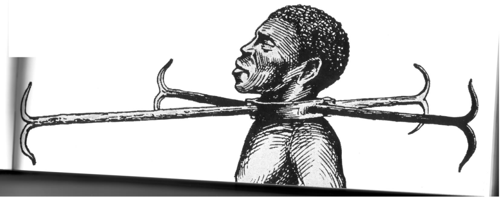

SLAVERY
In Histoy
Allah created this world more than 10 million years ago and created people with different colors , types and nationalities
From the creature of the human being who tried , still trying and will always try till the judge day to build up the earth but of course he committed some mistakes during his 10 million year journey
one of the most important of them
is
SLAVERY
History
Slavery has spread in the Earth in many different places in different years but it is thought that it was appeared first in 6800 B.C in Mesopotamia as they forced their defeated enemies to serve them and then slavery appeared in the ancient Egypt , in Asia , in the Americas , in Europe
Nowadays slavery
is forbidden due to the laws which were put and the human rights which are applied in the whole world
Background Transitions
Pass reveal.js the backgroundTransition: 'slide' config argument to make backgrounds slide rather than fade.
Background Transition Override
You can override background transitions per slide by using data-background-transition="slide".
Clever Quotes
These guys come in two forms, inline:
“The nice thing about standards is that there are so many to choose from”
and block:
“For years there has been a theory that millions of monkeys typing at random on millions of typewriters would reproduce the entire works of Shakespeare. The Internet has proven this theory to be untrue.”
Pretty Code
function linkify( selector ) {
if( supports3DTransforms ) {
var nodes = document.querySelectorAll( selector );
for( var i = 0, len = nodes.length; i < len; i++ ) {
var node = nodes[i];
if( !node.className ) {
node.className += ' roll';
}
}
}
}
Courtesy of highlight.js.
Intergalactic Interconnections
You can link between slides internally, like this.
Fragmented Views
Hit the next arrow...
... to step through ...
any type- of view
- fragments
Fragment Styles
There's a few styles of fragments, like:
grow
shrink
roll-in
fade-out
highlight-red
highlight-green
highlight-blue